Methodology
Methodology
Here’s the link to our project report.
Data Preparation
Before we begin, ensure that your QGIS active window has the correct projected coordinates system:
EPSG: 3414. For all subsequent layers used, do save them in 3414 before processing.
Creating mainland layer of Singapore (excluding secondary islands)
1. Under your Browser panel, look for master-plan-2019-subzone-boundary-no-sea-kml.kml and
add URA_MP19_SUBZONE_NO_SEA_PL to your Layers panel. The layer should look like this:
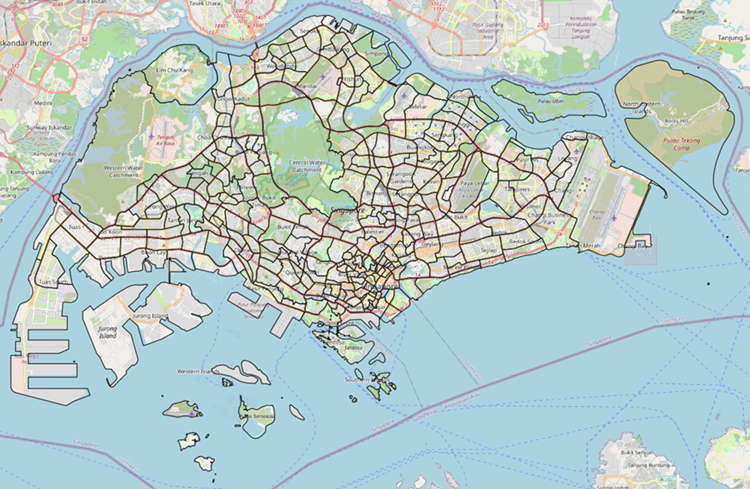
- Use the Select Features by Freehand tool to draw out the mainland of Singapore like below:
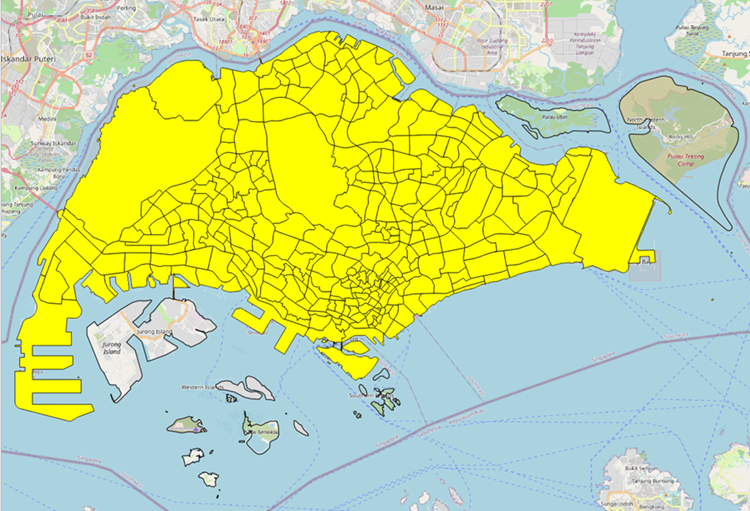
- On your Layers panel, click Export -> Save Selected Features As
- Create new GeoPackage folder, Project, and name the new layer as mainland
- Remove the raw data layer, URA_MP19_SUBZONE_NO_SEA_PL, that was downloaded as we
have our new mainland layer
Creating Primary School Students by Subzone layer
1. Load respopagesex2011to2020 layer onto Layers panel
2. Under Database menu bar, select DB Manager and execute the following query:
select “SZ”, “Age”, sum (“Pop”) as “POP2019”
from respopagesex2011to2020
where “Time” = ‘2019’
group by “SZ”, “Age”
3. Load the executed query as a new layer and untick geometry
4. Use Select by Expression tool in the attribute table to select:
Age in (7,8,9,10,11,12)
5. Use Field Calculator tool, create a new field containing Subzone names in uppercase:
Upper("SZ")
6. Save Selected Feature as prisch_student_sz, untick geometry
7. Open mainland layer and join table
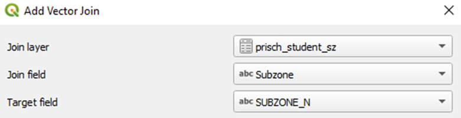
8. Save the joined layer as mainland_joined
9. Use Select by Expression tool in the attribute table to select:
“prisch_student_sz_POP2019” is null
10. Use Field Calculator to update mainland_joined's existing field NULL values to 0 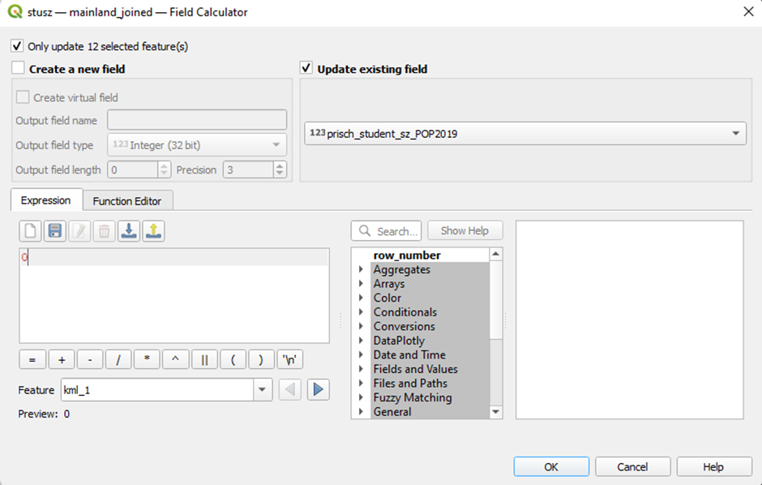
- Save the layer as mainland_with_student
Creating Choropleth Map of Primary School Students in Each Subzone
1. Double-click on mainland_with_student, select Symbology
2. Select Graduated
Value: prisch_student_sz_POP2019
Mode: Natural breaks (Jenks)
3. Click on Classify
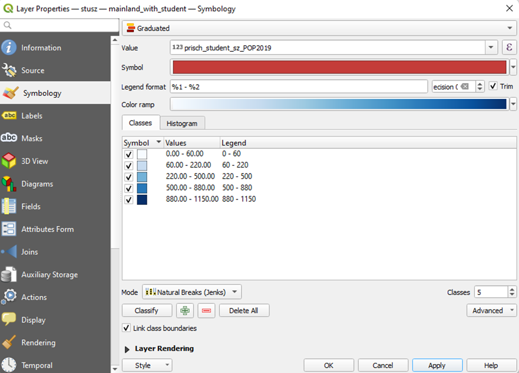
- Return to your QGIS active window. Your map should look like the following
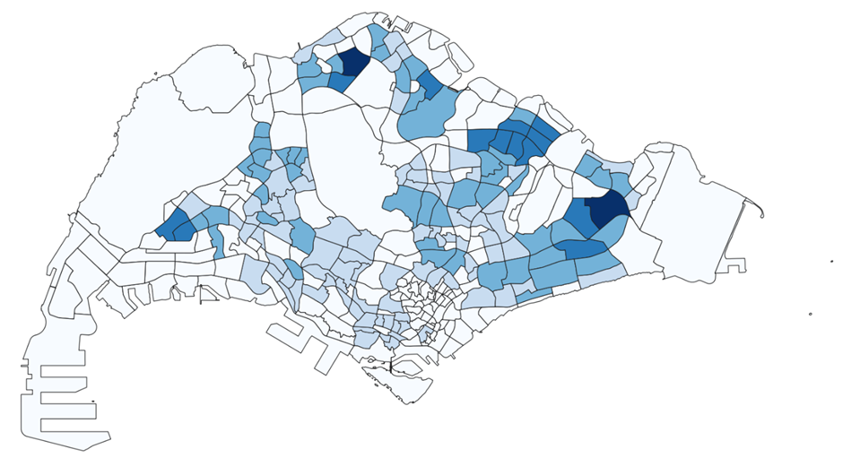
Creating all_primary_schools layer
With the current school-directory-and-information.csv file, the 7 closed schools have been removed.
We need to manually add their school name, address, and postal code into the CSV file. We can find
these on Google.
For us to geocode our school points onto our mainland layer more accurately, we need to modify
school-directory-and-information.csv to include the x and y coordinates. We can use SLA OneMap API
to help us. Read the code chunks below into your RStudio environment. Enter the lines in blue into your
console.
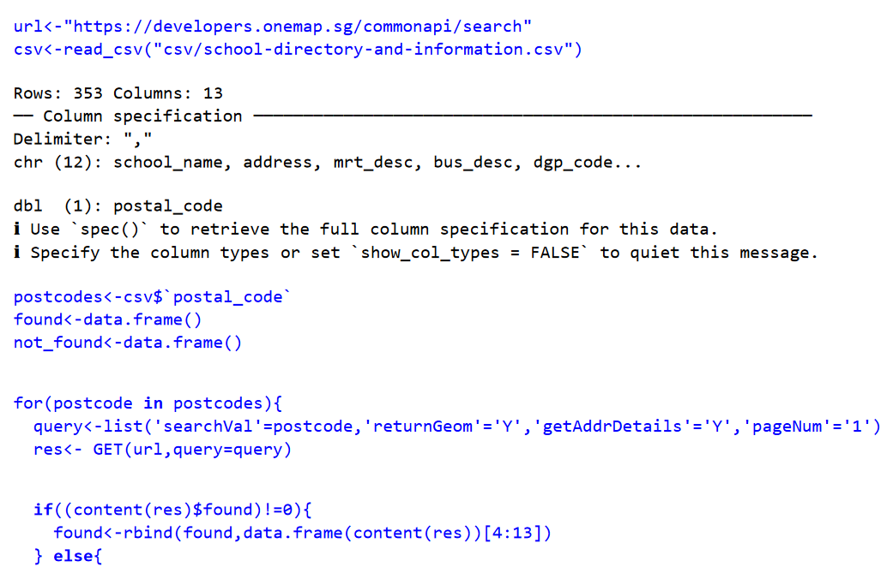
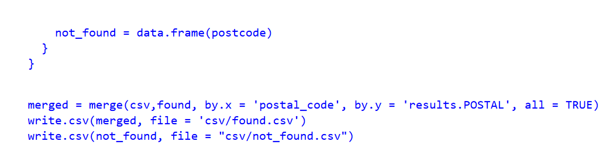
Now that we have more complete csv file, found.csv, we can add it in our QGIS as a point layer
1. Under the Layer menu bar, select Add Layer -> Add Delimited Text Layer
2. Select the found.csv that you've just created and fill up the rest accordingly. Ensure that your
Geometry CRS is in 3414.
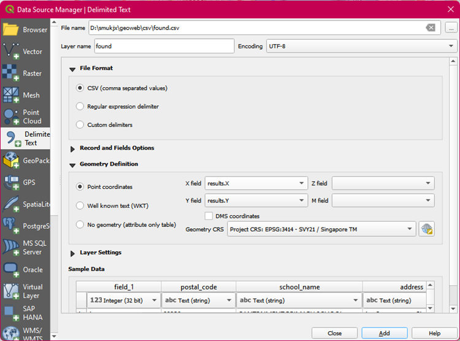
- A new layer, found, will be added to your Layers panel. Save the layer into your Project
Geopackage as geocoded_schools
- Open the attribute table of geocoded_schools. Use Select by Expression tool to filter only the
primary schools. You should have 194 selected features, with 3 rows having NULL for column
results.
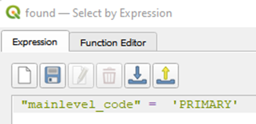
5. Save Selected Features As all_primary_schools into your Project GeoPackage 6. Open the attribute table of all_primary_schools
7. Under the school_name field, look for MACPHERSON PRIMARY SCHOOL
8. Enable the Toggle Editing tool and delete away one of the duplicated row
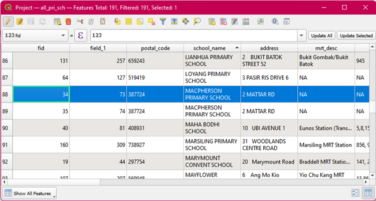
- Disable the Toggle Editing tool to save the changes made
Creating closed_primary_schools layer
From the attribute table of all_primary_schools, select the 7 closed primary schools (Balestier Hill
Primary School, Coral Primary School, Da Qiao Primary School, East Coast Primary School, East View
Primary School, Loyang Primary School, and Macpherson Primary School) that have already been added
in. This can be done quicker by filtering the school_name field.
After the 7 closed schools have been selected, we can save the Selected Features into the Project
GeoPackage and name the new layer as closed_primary_schools.
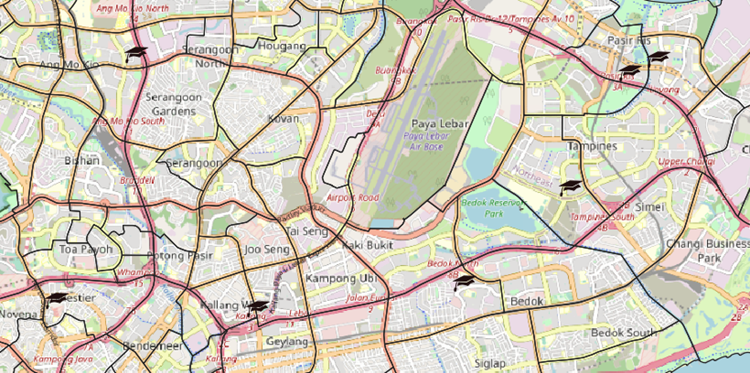
Creating current_primary_schools layer
From the attribute table of all_primary_schools, we can click on the Invert Feature Selection button that
would select the other 183 primary schools.
After the 183 schools have been selected, we can Save Selected Features As current_primary_schools
into the Project GeoPackage
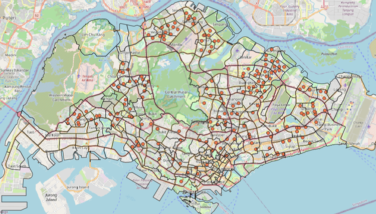
Creating Choropleth Map of Schools in Each Subzone
1. Under Vector menu bar, select Analysis Tools -> Count Point in Polygon
2. Enter the following inputs
- Ensure to set Invalid feature filtering to Do Not Filter (Better Performance)
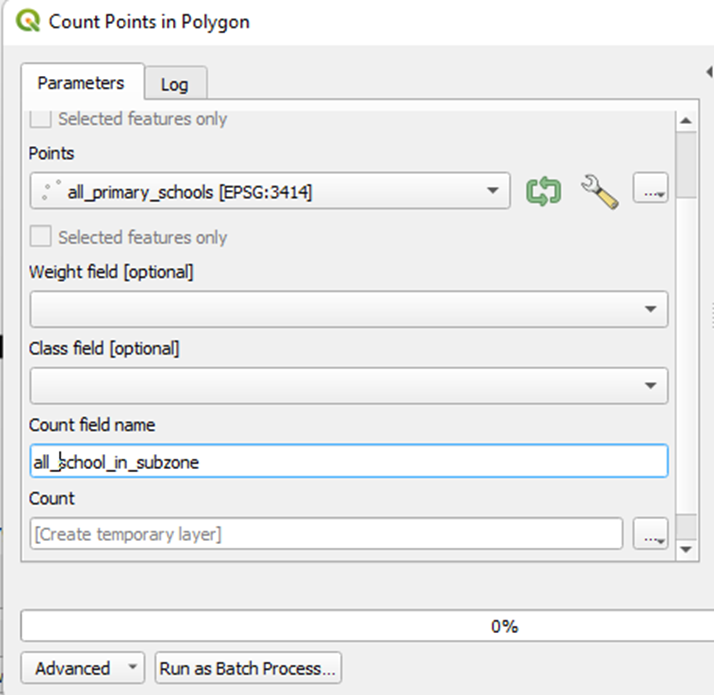
- Save the temporary file, Count, as all_school_in_subzone
- Double-click on all_school_in_subzone, select Symbology
- Select Categorized
- Value: all_school_in_subzone
- Click on Classify
- Change the Symbol for Value 0 to white
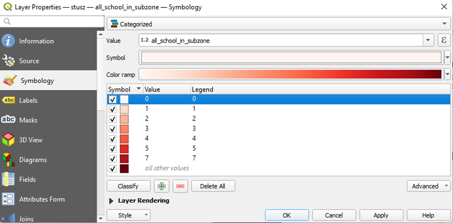
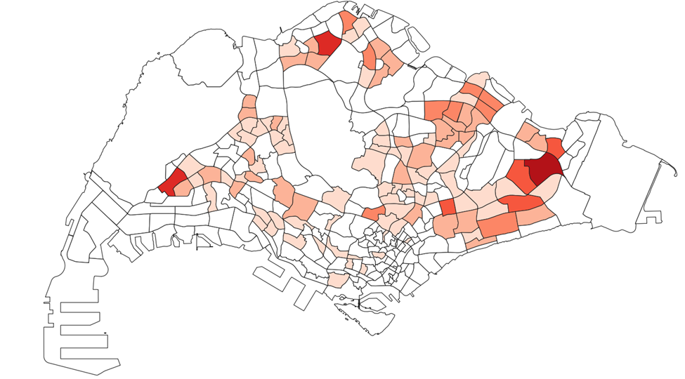
Creating walking layer
1. Load gis_osm_roads_free_1.shp onto your Layers panel
2. Save it in 3414 projected system as roads_3414 into your Project GeoPackage
3. Use Select by Location tool to select all the roads in mainland layer
4. Save Selected Features As all_roads into your Project GeoPackage
5. Open the attribute table of all_roads
6. Use Select Features by Expression tool and enter the following
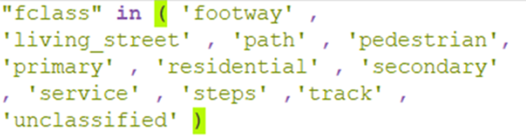 7. Save Selected Features As walking into your Project GeoPackage
Creating privatedriving layer
1. Open the attribute table of all_roads
2. Use Select Features by Expression tool and enter the following
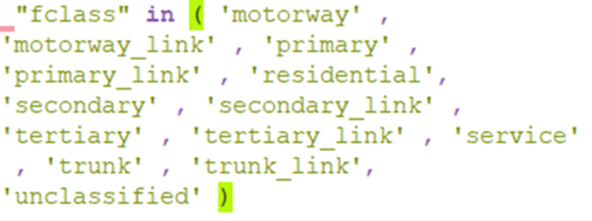 3. Save Selected Features As privatedriving into your Project GeoPackage
Creating hex_residentials and hex_residentials_centroids layer
1. Load gis_osm_landuse_a_free_1.shp onto Layers panel
2. Save it in 3414 projected system as landuse_3414 into your Project GeoPackage
3. Use Select Features by Expression tool to filter only residentials
4. Save Selected Features As residential_landuse into your Project GeoPackage
5. Use Select by Location tool to select all the residentials in mainland
- Ensure to set Invalid feature filtering to Do Not Filter (Better Performance)
6. Save Selected Features as mainland_residential_landuse
7. Under the Vector menu bar, select Research Tools -> Create Grid. Fill up the following
- For Grid extent, select mainland_residential_landuse
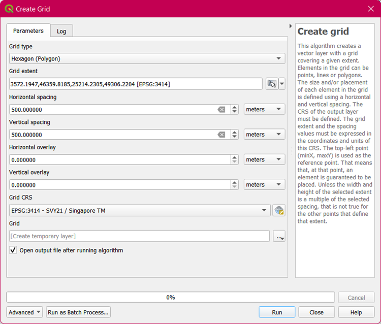 8. A temporary layer, Grid, appears under Layers panel
9. Use Select by Location tool to select all the hexagons in the temporary layer, Grid, that intersect
with mainland_residential_landuse
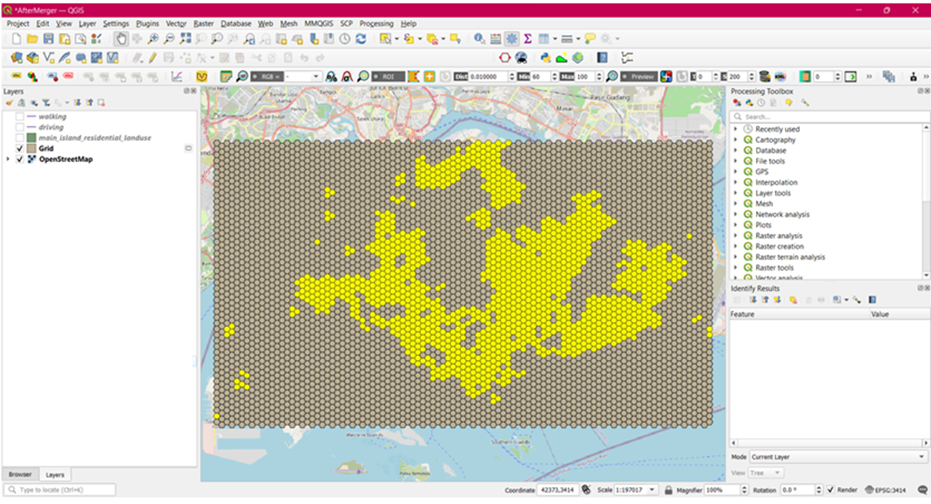
10. Save Select Features As hex_residentials into your Project GeoPackage
11. Remove temporary layer, Grid from Layers panel 12. Under the Vector menu bar, select Geometry Tools -> Centroids
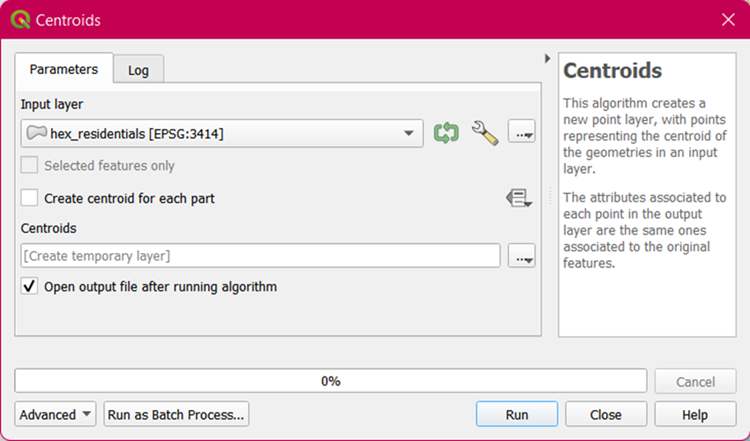
13. Save temporary layer, Centroids, as hex_residentials_centroids into your Project GeoPackage
14. Remove the temporary layer, Centroids, from your Layers panel. Below is how your QGIS active
window would look like if the centroids are successfully created
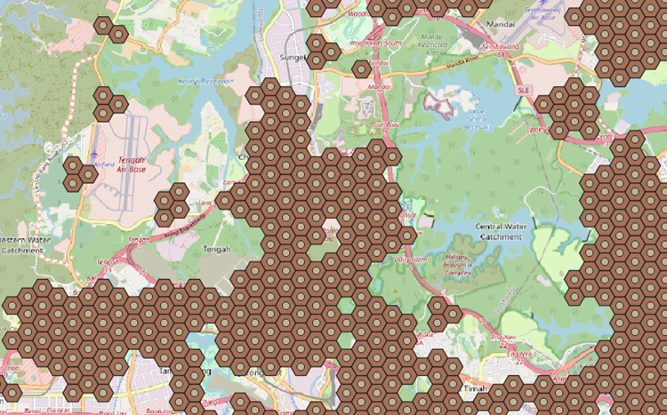
Data Cleaning
Find the Relative Student to School Ratio in Subzones
From the 2 choropleth maps of students (in blue) and schools (in red) distribution in each subzone, we
will create print layouts for each and export them as JPG files.
Using external tools such as Photoshop or other photo editing software, overlay the 2 maps on top of
each other and change the layer blend mode to multiply. The resulting image should look like this.
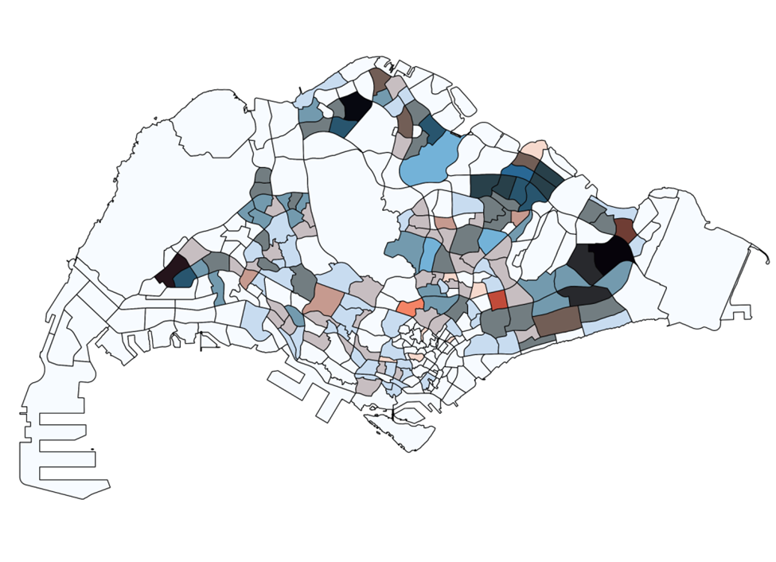
Find the Number of Affected Residentials
a. Buffer The first method we will use to find the affected residentials of the closure of schools will be by using
the buffering method.
1. Under the Vector menu bar, select Geoprocessing Tools -> Buffer
2. Enter the following inputs
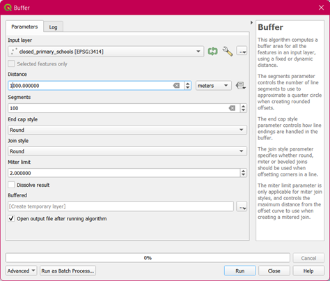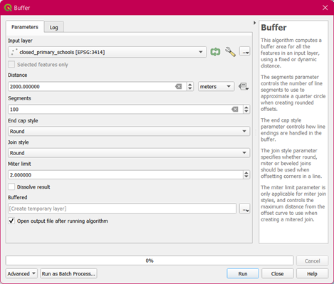
- 2 temporary Buffered layers have been added to your Layers panel
- Export these layers into the Project GeoPackage and name the new layers as closed_1kmb and
closed_2kmb respectively
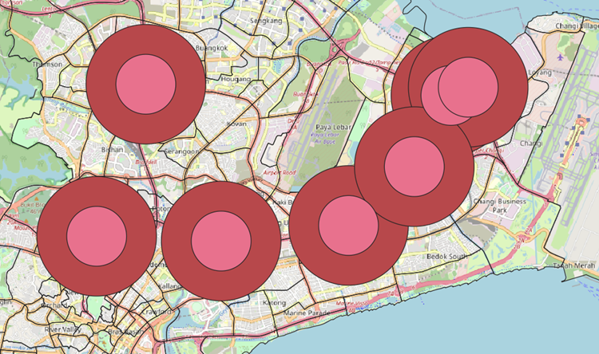
- 2 temporary Buffered layers have been added to your Layers panel
- Export these layers into the Project GeoPackage and name the new layers as closed_1kmb and
closed_2kmb respectively
- Remove the 2 temporary layers from your Layers panel
- Click on hex_residentials_centroids to activate the layer
- Using the Select Features by Radius tool, select the centroids that lie within all the buffer zones
surrounding the closed schools
- Save the layers respectively as 1km_affected and 2km_affected into your Project GeoPackage
b. QNEAT3
i. Shortest Path
The second method we will use to find the affected residentials of the closure of schools will be by using
the shortest path method 1. Under Processing Toolbox, search for QNEAT3
2. Select the Iso-Area as Polygons (from Layer)
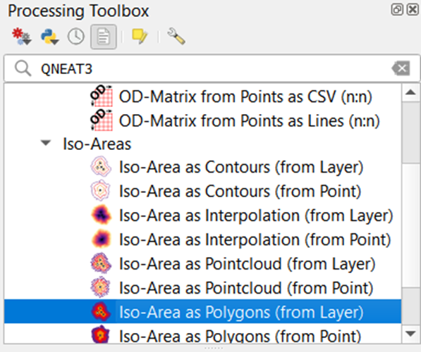
Since we are trying to find the shortest path of 1km and 2km respectively, for two modes of transport –
by walking and by private transport, we will be creating a total of 4 pairs of output polygon and
interpolation layers. We will only save the output polygons into our Project GeoPackage.
As these layers have many parameters that need to be kept to, the important inputs will be listed down
in the table below:
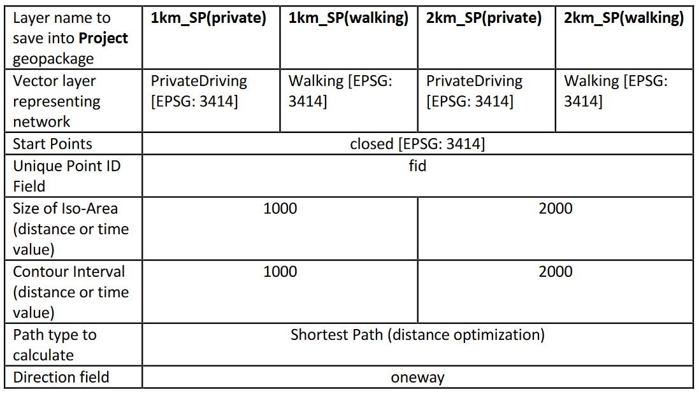
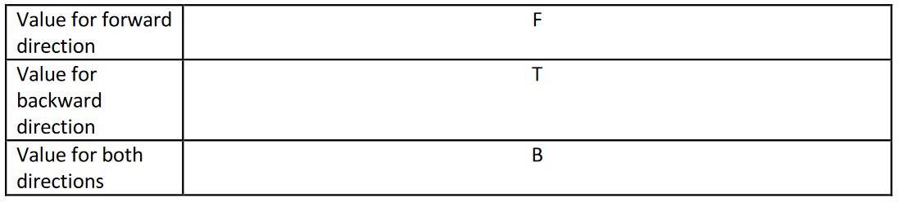
The following is a screenshot of how all 4 layers look like on our active QGIS window:
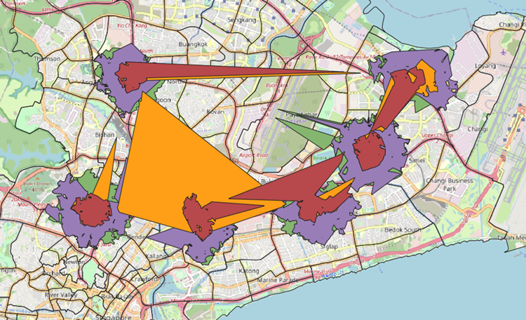
The third method we will use to find the affected residentials of the closure of schools will be by using
the fastest time method.
1. Under Processing Toolbox, search for QNEAT3
2. Select the Iso-Area as Polygons (from Layer)
Since we are trying to find the fastest time of approximately 1km and 2km respectively, for two modes
of transport – by walking and by private transport, we will be creating a total of 4 pairs of output
polygon and interpolation layers. We will only save the output polygons into our Project GeoPackage.
As these layers have many parameters that need to be kept to, the important inputs will be listed down
in the table below:
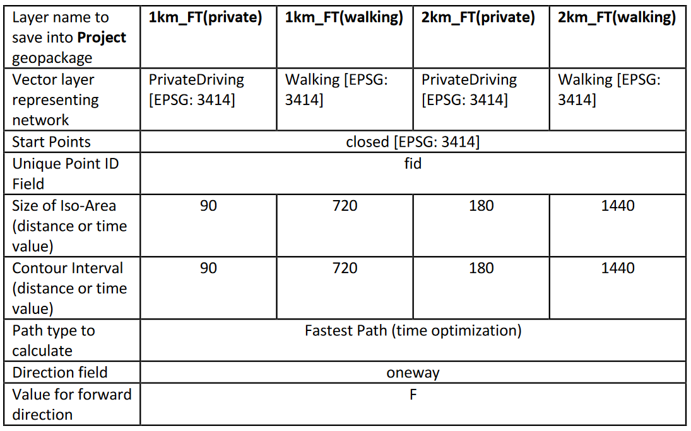
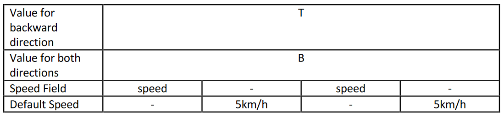
The following is a screenshot of how all 4 layers look like on our active QGIS window:
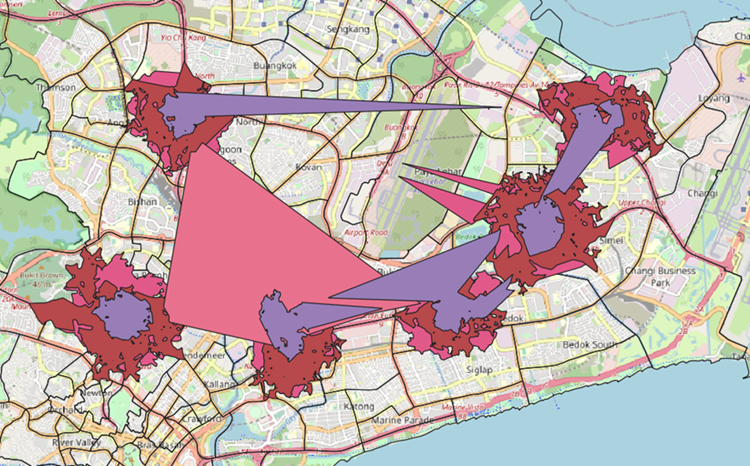
- Average out SP & FT
After we have created all 8 different layers via the shortest path and fastest time with QNEAT3, we can
calculate the number of affected residentials in each layer.
- Click on hex_residentials_centroids to activate the layer
- Using the Select Features by Freehand tool, trace the shape of each output polygon layer that
corresponds to the area around each closed school to find the number of residential centroids
affected
After finding the number of affected centroids, we can manually input these values into the
closed_schools CSV file. The CSV file should look something like this:
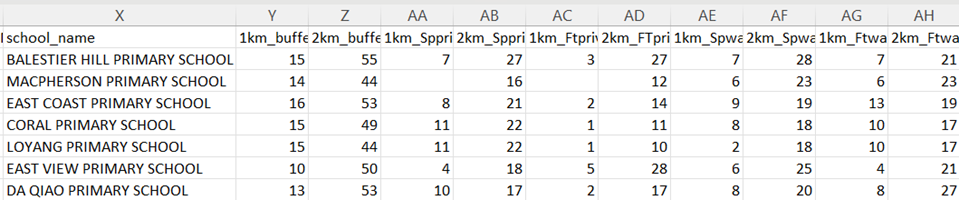
As these 2 methods are similar, we can average the two methods to obtain the average number of
residentials that have been affected.
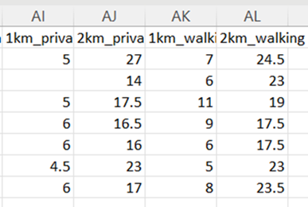
As these 2 methods are similar, we can average the two methods to obtain the average number of
residentials that have been affected.
From the 88 and 290 affected residential centroids obtain within the 1km and 2km buffer respectively,
we will first count the number of primary schools accessible via buffers, shortest path by walking and
shortest path by driving before and after merger. Afterwards, we will derive the percentage change.
For each residential centroid, let's create
1. A 1km buffer
2. A 2km buffer
3. A 1km shortest network path by walking
4. A 2km shortest network path by walking
5. A 1km shortest network path by driving
6. A 2km shortest network path by driving
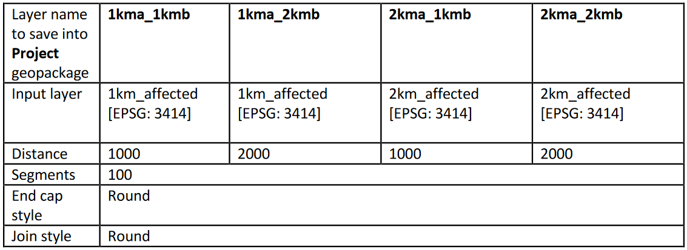
Create Shortest Paths for Affected Residentials
1. Under Processing Toolbox, search for network and select the built-in tool, Service area (from
layer). You will create 4 temporary pairs of Service area (line) layers and Convex hulls layers
each for 1km_affected and 2km_affected
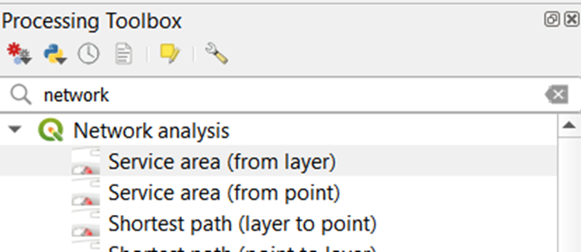
2. Enter the following under Parameters for each of the temporary service area layer
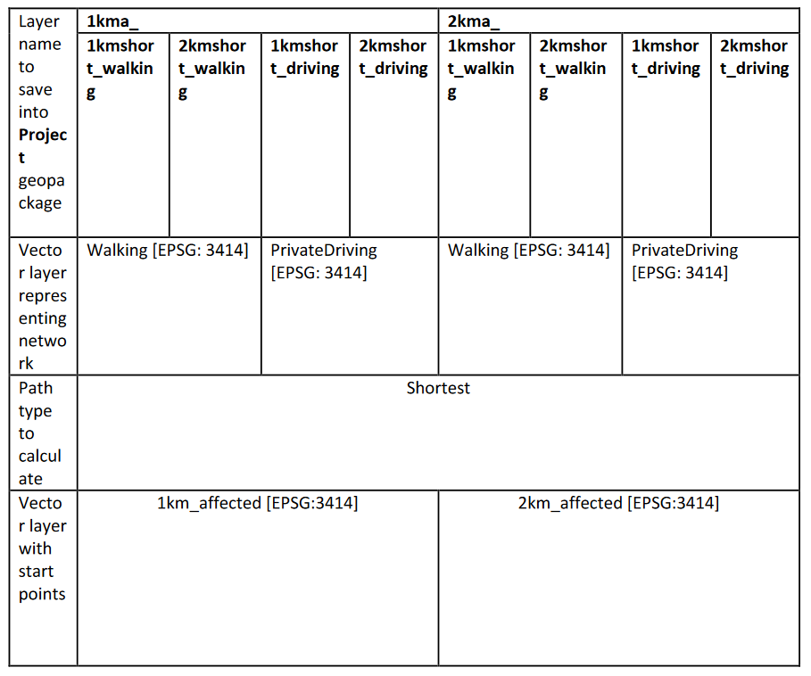 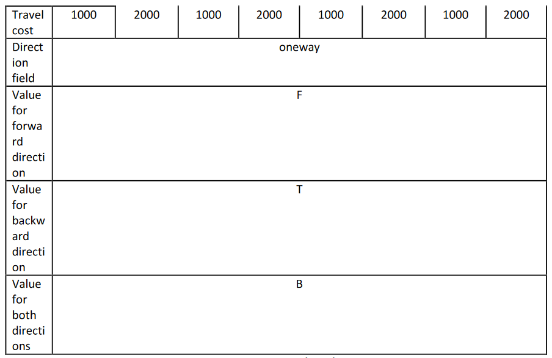
Below is an example of how your temporary Service area (lines) layer will look like:
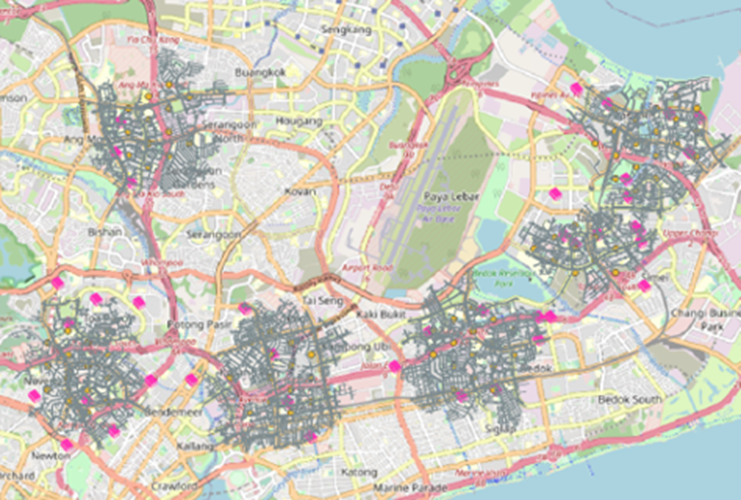 3. After each temporary Service area (lines) layer is added to your Layers panel, search for convex
under Processing Toolbox and select Convex hull
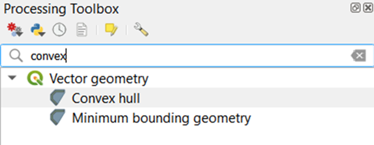 4. Select Service (area) lines as your Input layer and click Run
5. Another temporary layer, Convex hulls, is created under Layers panel
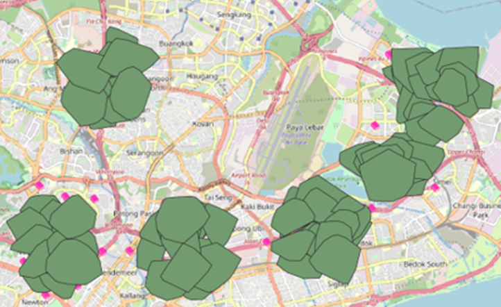
4. Select Service (area) lines as your Input layer and click Run
5. Another temporary layer, Convex hulls, is created under Layers panel
6. Save the above layer as 1kma_1kmshort_walking into your Project GeoPackage.
7. Remove both temporary layers, Service area (lines) and Convex hulls from your Layers panel
8. Do the same for another 7 times, using parameter inputs as shown in the above table
Find and Calculate the Number of Primary Schools Accessible by Buffers (1km_affected)
Under the Vector menu bar, select Analysis Tools -> Count Points in Polygon. You will create two pairs of
primary school count, one (consisting of all and curr) for each buffer
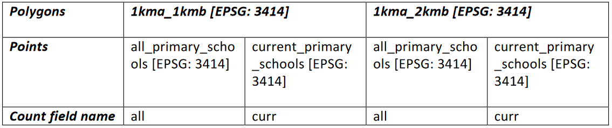 1. Rename the temporary layer, Count, as
- all when your input for Points is all
- curr when your input for Points is curr
2. Open the Layer Properties window for 1km_affected
3. Click on Joins and then the green + icon
4. Enter the following inputs
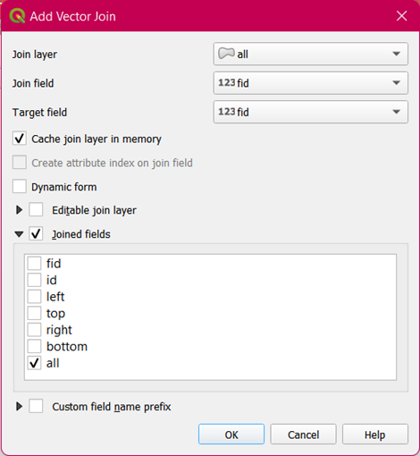 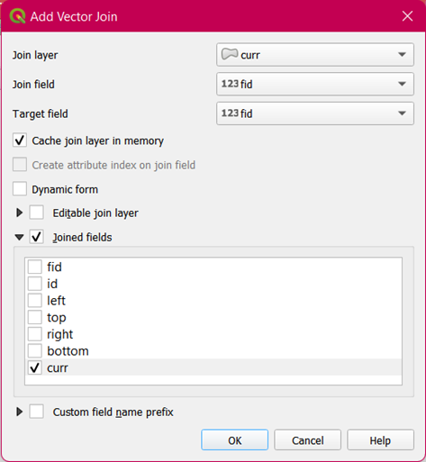
- Notice that the attribute table of 1km_affected will have 2 new fields, curr_curr and all_all.
You will now create a new field, 1KM_BUFF_PERC_CHANGE
- Open your field calculator tool and enter the following expression
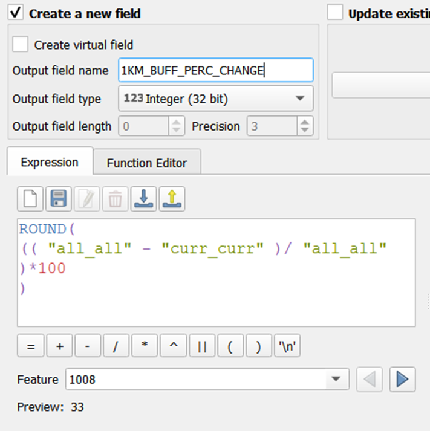
- Update the NULL values in your newly created field with the following expression
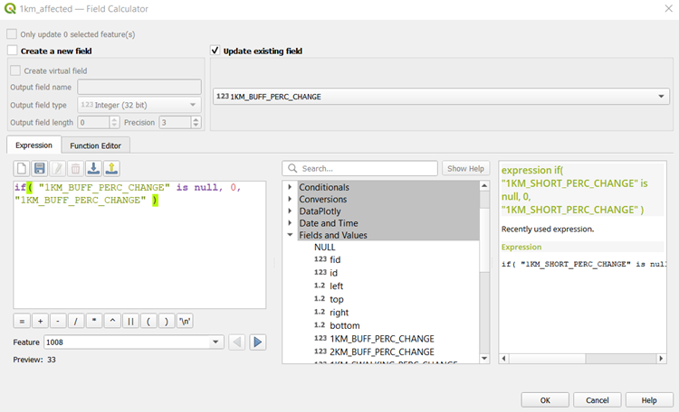
- Remove curr and all from your Layers panel
- Repeat the above steps to create a new field, 2KM_BUFF_PERC_CHANGE
Find and Calculate the Number of Primary Schools Accessible by Walking the Shortest (1km_affected)
Under the Vector menu bar, select Analysis Tools -> Count Points in Polygon. You will create two pairs of
primary school count, one (consisting of all and curr) for each walking polygon 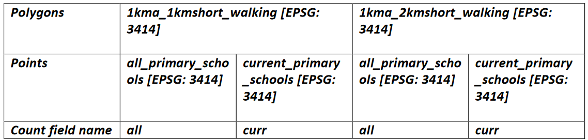
With the steps above, create 1KM_SWALKING_PERC_CHANGE and 2KM_SWALKING_PERC_CHANGE
Find and Calculate the Number of Primary Schools Accessible by Drivingthe Shortest (1km_affected)
Under the Vector menu bar, select Analysis Tools -> Count Points in Polygon. You will create two pairs of
primary school count, one (consisting of all and curr) for each driving polygon 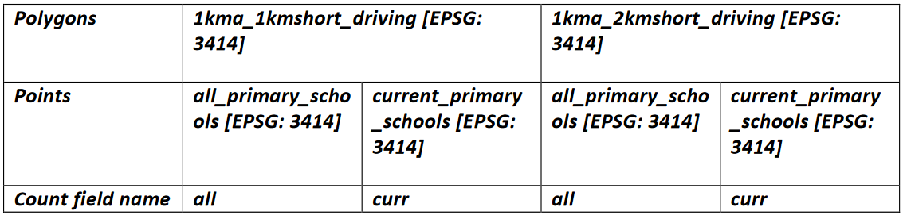
With the steps above, create 1KM_SDRIVING_PERC_CHANGE and 2KM_SDRIVING_PERC_CHANGE
At the end, the attribute table of 1km_affected should look like the following: 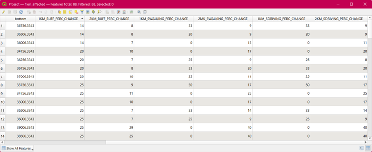
Now that you have finished creating all 6 new fields, repeat all the steps from the above 3 sub-sections
for 2km_affected.